2 diffuses through the GDL and MPL t">Zero-gap membrane electrode assemblies reach industrial current densities, but their cathodes flood and fill with (bi)carbonate salt within hundreds of hours.
Approach
- Full-cell model of a zero-gap CO2-to-CO electrolyser, from the gas channel to the anolyte.
- Follows where liquid water and (bi)carbonate salt accumulate in the porous cathode, and how they change transport over time.
- Results are being prepared for publication.
What I did
- A full-cell, multiphysics model of a CO2-to-CO membrane electrode assembly: species, charge, water and heat transport across the gas diffusion layer, microporous layer, catalyst layer, membrane and anode.
- Liquid water in every porous layer with pore-size-based capillary curves and potential-dependent electrowetting.
- Precipitated salt treated as a solid phase that changes porosity, permeability, active area and wettability, followed in time.
- Calibrated on a Ag/Cs+ cell; used to compare mitigation strategies such as pulsed operation and thermal gradients over the time scale on which they act.
Supervisor: Prof. Sophia Haussener.